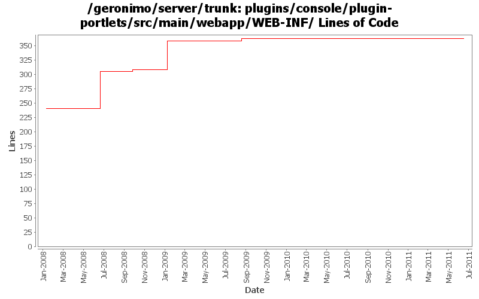

[root]/plugins/console/plugin-portlets/src/main/webapp/WEB-INF
 classes
(1 files, 122 lines)
classes
(1 files, 122 lines)
 view
(0 files, 0 lines)
view
(0 files, 0 lines)
 ajax
(1 files, 108 lines)
ajax
(1 files, 108 lines)
 car
(16 files, 1476 lines)
car
(16 files, 1476 lines)
 configmanager
(2 files, 126 lines)
configmanager
(2 files, 126 lines)
 realmwizard
(10 files, 1353 lines)
realmwizard
(10 files, 1353 lines)

| Author | Changes | Lines of Code | Lines per Change |
|---|---|---|---|
| Totals | 13 (100.0%) | 135 (100.0%) | 10.3 |
| gawor | 5 (38.5%) | 79 (58.5%) | 15.8 |
| dwoods | 2 (15.4%) | 51 (37.8%) | 25.5 |
| linsun | 1 (7.7%) | 4 (3.0%) | 4.0 |
| xuhaihong | 1 (7.7%) | 1 (0.7%) | 1.0 |
| djencks | 4 (30.8%) | 0 (0.0%) | 0.0 |
GERONIMO-6007 Upgrade woodstox version to 4.1.1
1 lines of code changed in 1 file:
update package name for PortletServlet
5 lines of code changed in 1 file:
Initial Japanese translation. Patch from Kan Ogawa (GERONIMO-4678)
5 lines of code changed in 1 file:
GERONIMO-4484 Extraction, localization and display of messages generated in portlets. Applied common-message-plugin.patch from Gang Yin, along with removing Tomcat API depends introduced in early patch.
51 lines of code changed in 2 files:
add helper pages for install plugin, create plugin and server assembly portlets
4 lines of code changed in 1 file:
split plugin portlet into 3 sub portlets and other minor layout improvements (GERONIMO-3868)
67 lines of code changed in 2 files:
forward all dwr requests through the /console context (GERONIMO-3781)
2 lines of code changed in 1 file:
GERONIMO-3732. Move the rest of deployment functionality out of console base and (mostly) into plugin-portlets. Revert the accidental menu name change for looking at web apps
0 lines of code changed in 4 files: